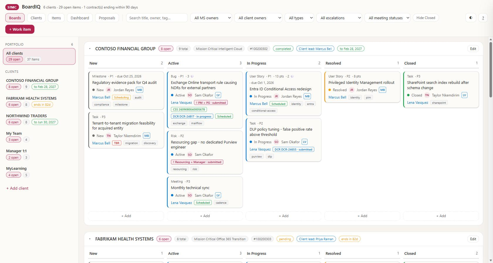
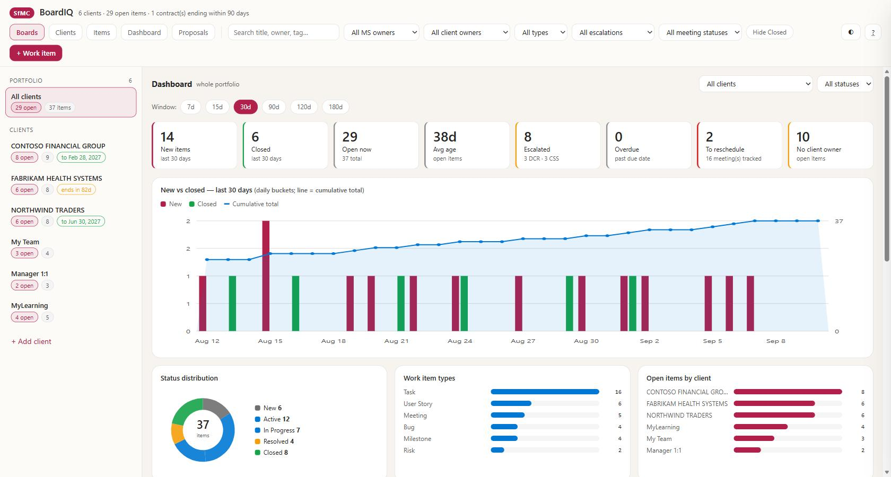

A delivery board for every engagement you own — customer or internal — that keeps itself current by reading your mail and Teams and proposing changes for you to approve.
Runs on your machine No install No database No cloud service Python standard library only
Unzip anywhere → double-click Start.cmd → your browser opens at
http://127.0.0.1:8791 with six demo clients already loaded.
Everything below is detail for when that isn't enough.
| Requirement | Notes |
|---|---|
| Windows 10 or 11 | PowerShell 5.1 (built in) is enough. PowerShell 7 also works. |
| Python 3.9 or newer | Standard library only — there is nothing to pip install. |
| A browser | Any modern one. |
| Admin rights | Not required — everything runs as you, in your own user profile. |
python --versionYou want Python 3.9.x or higher.
You have the Windows execution alias rather than a real interpreter. Either install Python from python.org (tick Add python.exe to PATH during setup), or switch the alias off under Settings → Apps → Advanced app settings → App execution aliases.
Anywhere you have write access — C:\Tools\SfMC-BoardIQ,
%USERPROFILE%\SfMC-BoardIQ, a folder in your Documents. It does not
matter, and it does not have to be the same path as anyone else on the team.
Right-click the .zip → Extract All… Opening the zip and
double-clicking Start.cmd from the preview window will fail, because
Windows extracts that one file to a temporary folder without the rest of the app.
Start.cmd
A console window opens, the server starts, and your browser lands on
http://127.0.0.1:8791.
Start.cmd exists to clear two Windows guard rails that otherwise stop a
shared zip dead — see Mark of the Web below. It changes nothing
outside this folder.
cd "C:\path\to\SfMC-BoardIQ"
Get-ChildItem -Recurse -File | Unblock-File
.\Start-Boards.ps1
The Unblock-File line is only needed once, on the first run after
extracting.
You should see 6 clients · 29 open items in the header and a board full of cards. If you do, you're done — everything works.

The portfolio view. All companies and people shown are fictitious.
Leave the console window open while you use the board, or see section 4.
| Tab | What it's for |
|---|---|
| Boards | Kanban per client. Drag cards between columns. Every chip answers a question you'd otherwise have to open the item to ask — who owns it on the customer side, is it escalated, is there a support case, is a meeting booked. |
| Clients | Add clients, set the client lead, set search terms, request a scan. |
| Items | Every item as one flat sortable list. Filter, multi-select, bulk archive or delete. |
| Dashboard | New vs closed over 7/15/30/90/120/180 days, ageing, escalation load, overdue items, meetings still to book. |
| Proposals | The review queue — proposed change shown against the current item, field by field. Nothing reaches a board without passing through here. |

The dashboard. Charts are hand-drawn SVG — no charting library, no external requests.
Full documentation is served by the app itself at
http://127.0.0.1:8791/readme, or press ? in the toolbar.
The console window from Start.cmd has to stay open. To have the board
start on its own at sign-in and stay up, register the scheduled task:
cd "C:\path\to\SfMC-BoardIQ"
.\Install-Autostart.ps1That registers a task which:
.\Watchdog.ps1 -Status # is it up?
.\Watchdog.ps1 # start if down
.\Watchdog.ps1 -Restart # stop and start fresh
.\Install-Autostart.ps1 -Status # task state, last run, next run
.\Install-Autostart.ps1 -Remove # unregister
Only one copy of this folder can run at a time, because the server deliberately
refuses to bind a port twice. If you want a second copy for experimenting, give it
a different port and taskName in
instance.json, or start it ad hoc with
python server.py --port 8799 --no-browser.
The folder ships with six fictitious clients and 37 items — Contoso, Northwind and Fabrikam. Nothing in it relates to a real customer, so it is safe to screen-share, demo, or hand to anyone.
After a demo where you dragged cards around:
python seed_demo.py
.\Watchdog.ps1 -RestartThe rebuild is deterministic, but dates are always relative to today, so the demo never looks stale.
scanEnabled off for internal boards; a "My Team" board has no mail to read.My Team, Manager 1:1 and MyLearning are
genuinely useful as internal boards.
Everything is in data\store.json — one readable, diffable JSON file.
Every write snapshots the previous state into data\backups\ first.
There is no database and no cloud service; to back it up, copy the folder.
The board works perfectly well on its own — you can add and move items by hand. What Microsoft Scout adds is the part that saves the time: a weekday-morning read of your mail and Teams that proposes board changes and waits for you.
Everything needed is in the exports\ folder:
| File | What it is |
|---|---|
exports\automations\board-proposals.json | Scheduled automation — weekday scan that queues proposals |
exports\skills\client-scan\SKILL.md | The same logic as /client-scan, on demand |
exports\README.md | Import instructions, and how to try it against the demo data |
Both only POST to the proposals queue. The closing line of each prompt is
NEVER call POST/PUT/DELETE on {API}/items. Every change is applied by a
human on the Proposals page, which shows the proposal side by side with whatever it
would change.
The automation ships disabled on purpose. It reads your mailbox every weekday morning; that should not switch itself on because someone unzipped a folder. Enable it once you've confirmed the board answers and you're comfortable.
This is Mark of the Web, and it is the single most common failure with a shared zip. Every file extracted from a downloaded or emailed archive carries a hidden marker flagging it as internet-sourced, and PowerShell refuses to run it.
Start.cmd clears this automatically. To do it by hand:
cd "C:\path\to\SfMC-BoardIQ"
Get-ChildItem -Recurse -File | Unblock-FileThis affects only this folder. No machine-wide policy is changed.
See section 1 — you most likely have the Microsoft Store alias rather than a real interpreter.
.\Watchdog.ps1 -Status
If it reports DOWN, run .\Watchdog.ps1 to start it, then check
data\server.log for the reason.
Either the board is already running — just browse to it — or something else holds the port. To see what:
Get-NetTCPConnection -LocalPort 8791 -State Listen |
ForEach-Object { Get-Process -Id $_.OwningProcess }To move the board instead, change "port" in instance.json and restart.
Every write is snapshotted first. Restore the most recent good copy:
.\Watchdog.ps1 -Restart
# if that isn't enough, restore a backup:
Get-ChildItem data\backups\*.json | Sort-Object LastWriteTime -Descending |
Select-Object -First 5 Name, LastWriteTimeCopy the one you want over data\store.json and restart.
No. The server binds 127.0.0.1 only — it is not reachable from the
network, not from your colleagues, not from the internet. The board itself makes no
outbound calls. The optional Scout automation reads your mailbox using
your existing sign-in, and writes only to the local proposals queue.
| Item | What it does |
|---|---|
Start.cmd | Start here. Double-clickable launcher. |
instance.json | Name, logo, port, scheduled-task name, which boards pin to the bottom. The only file that differs between deployments. |
server.py | The whole back end — API plus static server. Standard library only. |
app\ | Front end: index.html, app.js, styles.css. No framework, no build step. |
data\store.json | Your data. One JSON file. |
data\backups\ | Rolling snapshots, written before every change. |
Watchdog.ps1 | Health check, start, restart. |
Install-Autostart.ps1 | Registers or removes the scheduled task. |
Start-Boards.ps1 | Manual launcher with a visible console. |
seed_demo.py | Rebuilds the fictitious demo data. |
exports\ | The Microsoft Scout automation and skill. |
docs\ | This guide, the solution overview deck, and screenshots. |
README.md | Full reference documentation — also served at /readme. |
There are no maintainer-only scripts in this package — the tooling used to publish new versions is kept out deliberately, so nothing here expects a folder you don't have.
SfMC:BoardIQ — local-first delivery boards. Ships with fictitious demo data; all companies, people, case numbers and dates shown in this guide and in the demo dataset are invented.
Next: open the solution overview deck for the
why, or the in-app documentation at /readme for the full reference.